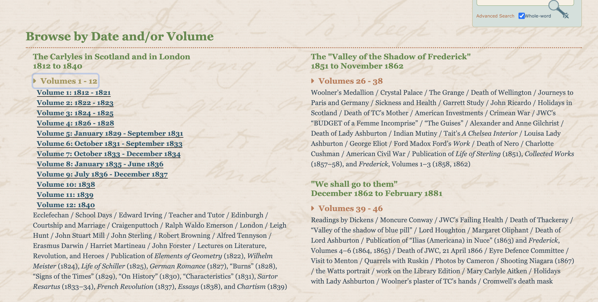
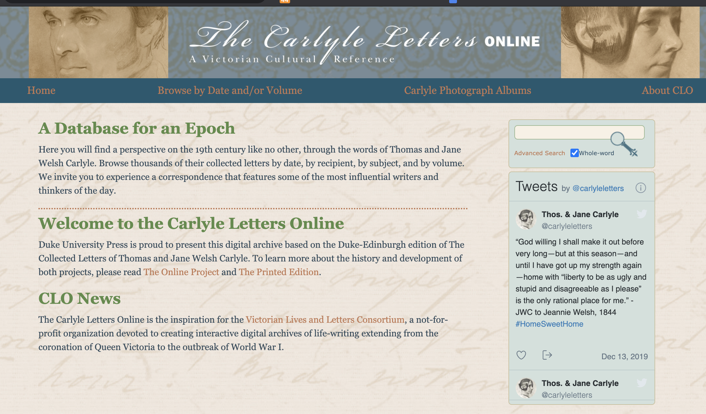
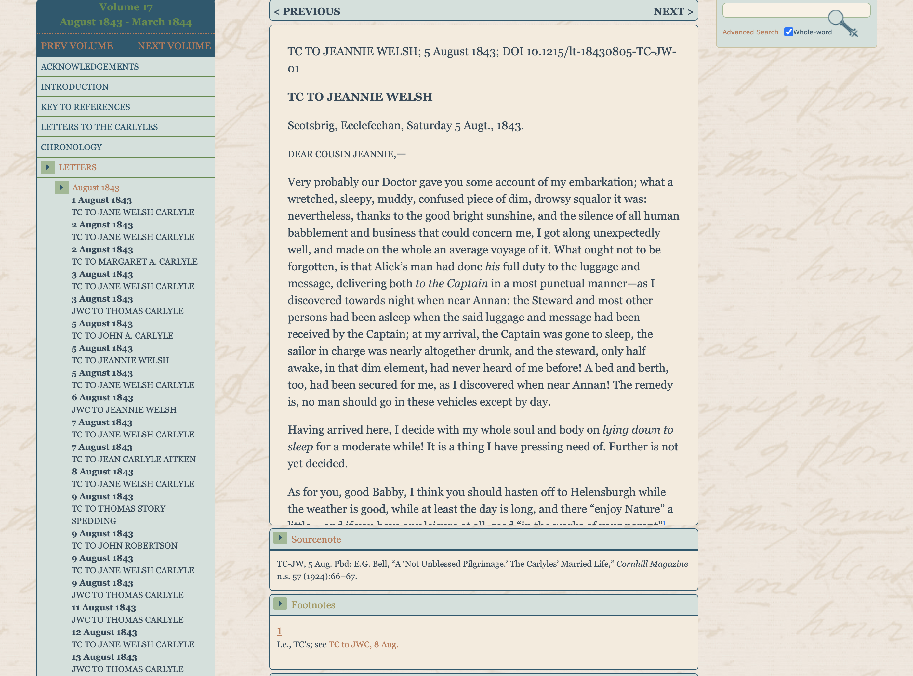
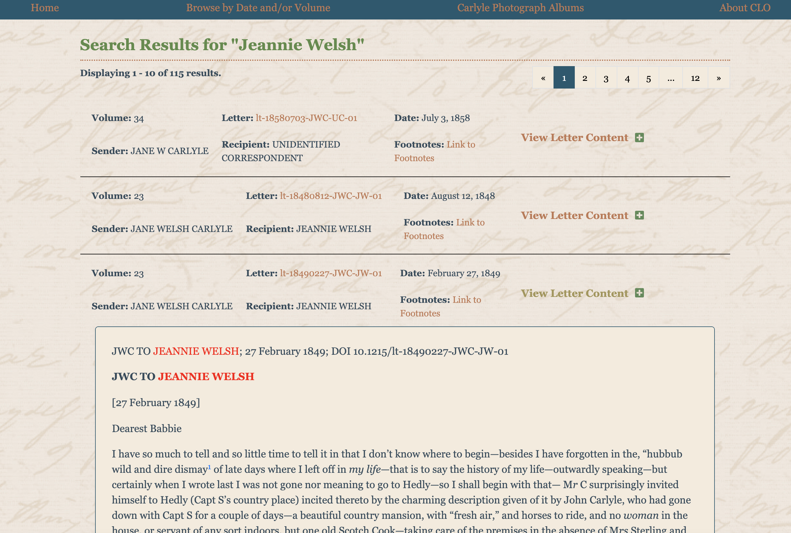
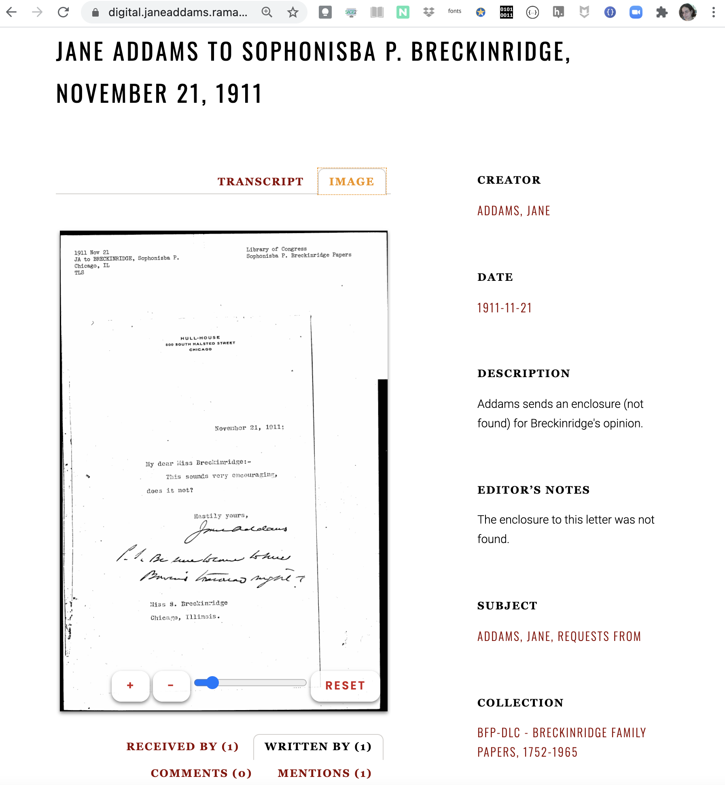
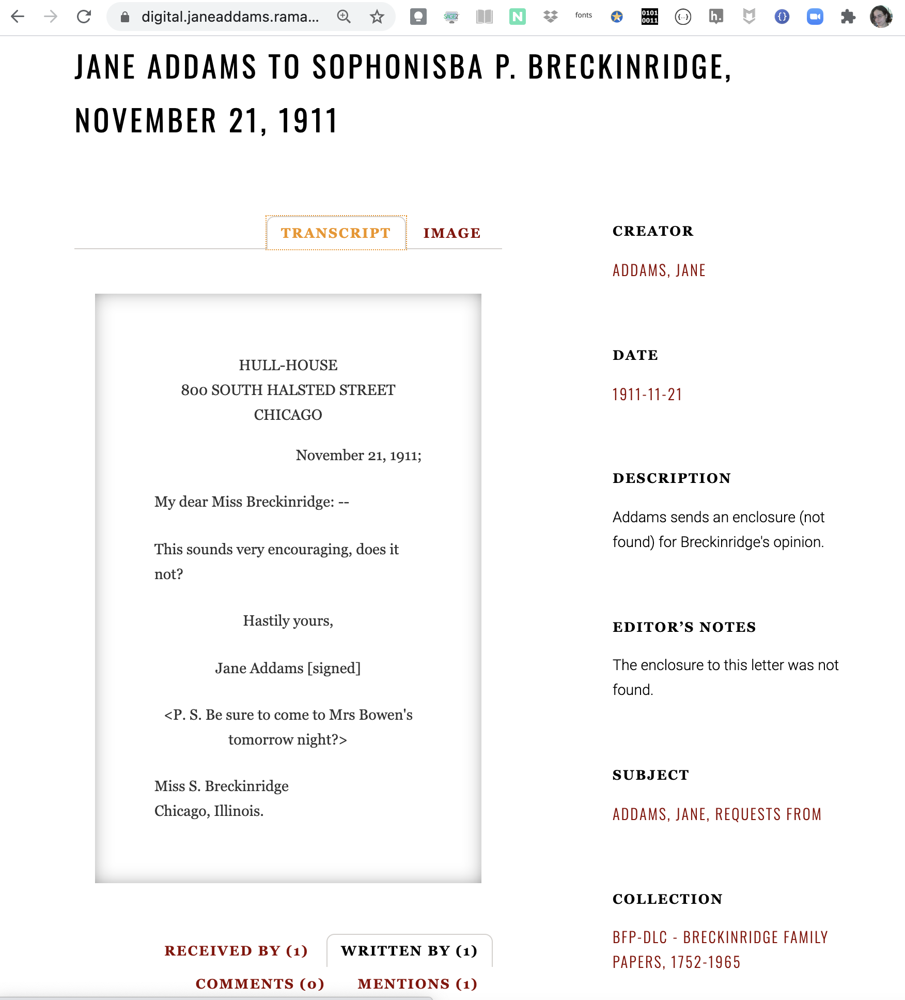
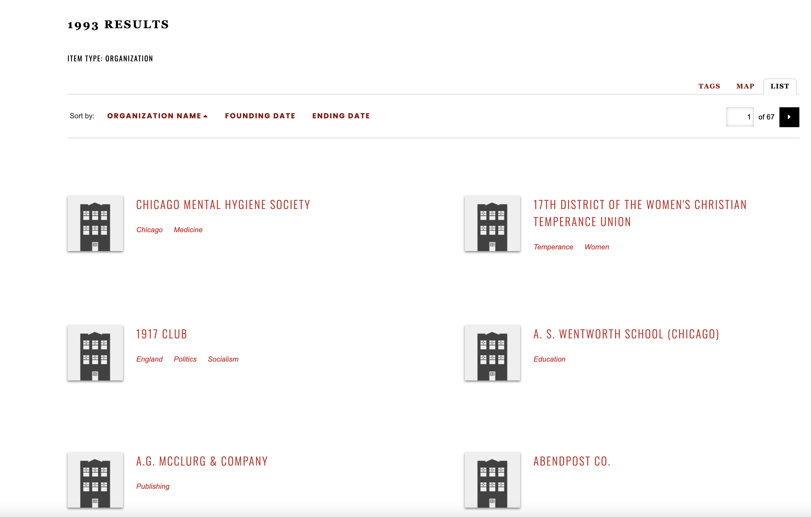
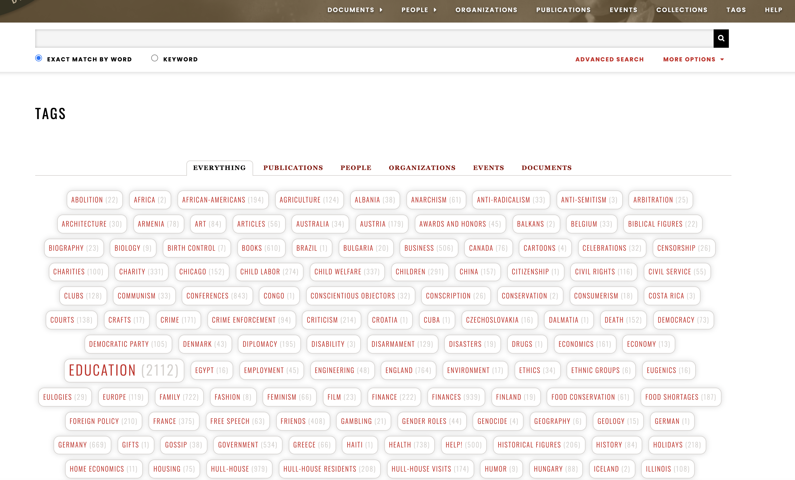

A comparative review of The Carlyle Letters Online and The Jane Addams Digital Edition
Table of Contents
Abstract
The Carlyle Letters Online (CLO) and The Jane Addams Digital Edition (JADE) represent digital scholarly edition projects comparable in their scale (7 – 8,000 documents), their relationships with print editions projects, and their self-definition as a database. They differ remarkably in their methods of document curation, the organization of their contents, in their search functionality, in their publishing frameworks, and in their relationship to the semantic web. Comparing and contrasting CLO and JADE serves to highlight issues of design, navigation, and planning for large-scale digital scholarly editions designed to complement print editions. While JADE follows a metadata based, semantic web approach and depends heavily on Omeka, CLO chose a more classical TEI approach, which has very different consequences both for end users and long-term sustainability.
Time-bound scholarly editions
When we pick up a print edition of historical correspondence, perhaps we turn immediately to the index to find a name or topic entry that brought us to the volume. Or we might estimate where to find a set of correspondence from the midpoint of a person’s letter-writing career by flipping somewhere near the middle of the book and checking the running heads as we go. The print edition usually provides a comfortably haptic navigation, but our fingers encounter the digital scholarly edition with less familiarity, even as we are given search interface tools to select a range of years or topics. The fine art of indexing prosopography and categorical topics is especially demanding for scholarly editions of correspondence and personal papers, whether these are print or digital. As Roberto Rosselli Del Turco has observed of their graphical user interfaces, digital scholarly editions need to teach us their system before we know how to browse efficiently, even when they invite serendipitous discoveries (Rosselli Del Turco 2012).
This review1 addresses two digital scholarly editions, The Carlyle Letters Online (CLO) and The Jane Addams Digital Edition (JADE), both of which co-exist with large-scale, ambitious print scholarly editions begun in the last century, and both of which challenge the reader’s capacity to navigate digitally. Due to the volume of materials each represents, this review primarily examines how we experience these editions as databases that we query to study and organize their documents. CLO announces itself on its banner as a ‘Victorian Cultural Reference’ for the compendium of information it provides on the daily life of an espoused pair of intellectual letter-writers, the Scottish historian Thomas Carlyle (1795–1881) and his spouse Jane Welsh Carlyle (1801–1866). CLO’s immense edition represents a time span of 1812–1881 and letters to an international array of famous nineteenth-century authors and thinkers including Erasmus Darwin, Ralph Waldo Emerson, Johann Wolfgang von Goethe, Elizabeth Gaskell, Charles Dickens, Elizabeth Barrett Browning and Robert Browning, Mary Anne Evans (George Eliot), John Stuart Mill, John Ruskin, and Ivan Turgenev among many others. While CLO represents letters written by the Carlyles over several decades, JADE includes documents (letters and more) written by a wider range of writers within a narrower time frame, as this edition aims to represent Jane Addams’ papers as well as those of her peers in the span of 1901–1935. So far what is available spans two decades, 1901–1919, and contains a wide range of materials: letters, newspaper clippings, and other documents related to the progressive social work of Jane Addams and her network of ‘New Women’ activists who sought reforms to child labor laws, women’s suffrage in the United States, and world peace (for which Addams won the Nobel Peace Prize in 1931). Addams and her peers were the founders of the Hull House settlement supporting working women in 1880s Chicago, and Addams dedicated her life’s work to the cause of educational and career advancement for women to live independently. As such, JADE should serve as an indispensable digital database of resources for scholars of ‘first wave’ feminism and women’s social activism in the early twentieth-century United States. Both JADE and CLO rely in different ways on database technologies to share their considerable resources.
Reviewing these resources helps to foreground how time bound we are in working with digital scholarly editions of letters and personal papers. We are time bound in assessing the scope of years or lives ‘covered’ by a collection and in managing our time to search and retrieve what we seek. The designers of digital scholarly editions, too, are time bound in ways that result in formal delimiters, priorities, and sacrifices even as they expand access and help to build new communities. Kenneth Price of the Walt Whitman Archive once explored the range of terms that we apply to large-scale digital editions: are they projects, databases, archives, or thematic research collections? CLO and JADE share with the Walt Whitman Archive the qualities of the edition as database, as Price describes it:
[…] database can be a suggestive metaphor because it points to the re-configurable quality of our material (and that of similar sites). The term also conveys simultaneously ‘finished’ and ‘unfinished’ qualities; while a project can be logically thought of as ‘done’ or ‘not yet done,’ we usually conceive of a database as usable as soon as it begins to exist, and we take as a given that the data will continue to proliferate, potentially indefinitely. The Whitman Archive resembles a database in that its content is discrete computer files that function atomistically: as functional units within a computing system each item is just as important as every other item.
The capacity for atomizing and remixing the material reflects the importance of the interface search features, which, as Price observes, are not just a function of computer machinery: ‘Argument is always there from the beginning in how those constructing a database choose to categorize information — the initial understanding of the materials governs how more fine-grained views will appear because of the way the objects of attention are shaped by divisions and subdivisions within the database. The process of database creation is not neutral, nor should it be’ (Price 2009). In this review, we will take seriously the idea that these edition databases have arguments to make in how they guide us to discover, sample, read, and remix their contents.
Where CLO and JADE differ remarkably is in the arguments of their database information architecture, in what they permit the reader to find and learn, in how they structure and enable very different experiences of reading, of finding, and of making connections. The differences between CLO and JADE as databases expose the distinct priorities of their editors about how editions of letters can open ‘windows’ into the past. In comparing these two editions as databases we will venture some observations about the challenges for their long-term sustainability.
Origins and intersections with print
CLO and JADE each share kinship with print ‘counterpart’ editions. Both digital editions are connected to print volumes that were, in some cases, in production while the digital editions were underway. In each case we see how the digital edition adds new content as well as new organizing principles in its database capacities.
A researcher or research library could subscribe to the print edition of the Carlyle letters, regularly receiving new installments. As of January 2021, there are 48 volumes of an annually printed series, The collected letters of Thomas and Jane Welsh Carlyle, with the latest apparently newly published. This print edition is represented as an annual journal series on the Duke University Press website, with each issue bringing out a new year (or short range of years) of edited correspondence from the prolific letter-writing married couple. The serial publication evokes nineteenth-century distribution of large volumes and a regular production model that calls for subscribers. The latest volume is surprisingly affordable, with volume 48 (representing letters from October 1871 through September 1873) listed at $30 USD from Duke University Press. Most researchers, though, would access the print volumes through their libraries, and my current access to this impressively long-running series is mediated temporarily and in highly limited ways by HathiTrust.
The editing of Jane Addams’ papers, too, began with a multi-generational, ongoing print edition counterpart to the digital edition. The first three print volumes of The Selected Papers of Jane Addams, prepared by the lead editor Mary Lynn Bryan, present Addams’ writings and related documents from 1860–1881, 1881–1888, and 1889–1900 respectively, with the last of these only recently published in 2019 (Bryan 1984; Bryan / Bair / De Angury 2003 and 2009; Bryan / De Angury 2019). All of this work is grounded in an 82-reel microfilm collection curated by Bryan in the 1980s, a collection representing Addams’ papers spanning her life (1860–1935) and including newspaper and periodical clippings about her through 1960. The lead editor of JADE, Cathy Moran Hajo launched the digital edition project when Mary Lynn Bryan announced her retirement from the Selected Papers print project after production of volume 3 and sought a successor. Hajo will continue Bryan’s work on the print edition project but took the opportunity to develop a digital edition first (Hajo 2017).
The digital edition aims to represent only a subset of the material from 1901–1935, the same period that Hajo is expected to cover in her print editions of The Selected Papers of Jane Addams, Volumes 4–6. Unlike the CLO, the materials in the digital edition do not yet duplicate work available in the print editions. They are, however, grounded in Bryan’s earlier curation work, as Hajo notes, ‘What we had to work with was the microfilm itself and the guide and index’ (Hajo 2017). When volumes 4 through 6 of Selected Papers are printed, we may expect them to represent the Addams documents shared in the current digital edition. The print and digital projects seem to have completely different priorities, however, as JADE does not reproduce the print or microfilm format or its chronological sequencing. The print edition of The Selected Papers organizes Jane Addams’ life in biographical segments much like the print and digital editions of the Carlyle letters. Selected Papers offers very detailed biographical introductions and lengthy contextual footnotes documenting events, institutions, and transformative life experiences (such as Addams’ experiences as a medical student or her European Grand Tour). These volumes are organized chronologically to help readers follow a narrative of Addams’ life through her papers. Appended within their extensively researched paratextual footnotes and headnotes, we find the ingredients for a network of data about people, places, events, and topics that become the organizing principle of Hajo’s digital edition.
CLO and JADE are each designed to encompass many thousands of documents in a ready-to-hand, freely accessible system alternative to their expensive and more rarely distributed print counterparts. How accessible are their contents for circulation and re-use? Of the two editions, JADE appears more permissive of reuse. JADE announces in a persistent footer visible on all pages of the edition that the ‘Material created by the Jane Addams Project’ (presumably the work of the editing team in the form of the curated metadata, annotations, and analysis) may be reused if the reuse is not for profit and cites the developers, and the reused version must be recirculated with the same conditions, following the Creative Commons Attribution-NonCommercial-ShareAlike 4.0 International License. The same footer announces that the source documents presented in the edition have their own copyright permissions, and on investigation of ‘record details’ on specific items, individual documents indicate that rights to share publicly have been secured by permission of the copyright holder. Each JADE document is given a persistent identifier and provides its own citation information (visible in each item’s ‘record details’), though this citation does not use the persistent identifier, but rather the website URL on the published edition, presupposing these URLs will remain stable. Here is a sample citation generated on a document item in JADE:
McClure, Samuel Sidney, ‘Samuel Sidney McClure to Jane Addams, November 2, 1910,’ Jane Addams Digital Edition, accessed May 17, 2021, https://digital.janeaddams.ramapo.edu/items/show/2808.
CLO, too, has a persistent footer visible on all pages that indicates copyright to Duke University Press. The editors provide instructions for citation and re-use on the ‘Citing / Using / Textual Note’ page.2 Here we learn that we must seek permission to publish ‘excerpts that exceed the dictates of fair use policy’ by following a ‘Permissions and Reprints’ link in the Services box on the home page. At the time of this writing, I do not find a Services box or such a link available on CLO, so this page may need to be updated. The persistent footer does, however, provide a contact email link for writing to customer relations at Duke University Press. The CLO editors provide guidance on citing documents, indicating that CLO is different from its counterpart print edition, and thus needs to be cited separately from it. Each item in the edition is given a Document Object Identifier (DOI) visible at the top of the edition display window, following the identifications of the writer, recipient, and date. We are urged to use this DOI in citations to specific documents, particularly when dates, names, and recipients are ambiguous or unknown, and this seems a wise measure in the event of future changes to URL schemes for the edition. Unlike JADE, CLO does not provide citations on its pages, but we are shown how to find the information needed for citations. CLO visitors are encouraged to work with citation manager software to help manage bibliography references. (DOI information is almost certainly not imported into Zotero or other citation managers by default.)
Distinct affordances of the database
CLO
CLO notes that it contains roughly seven thousand letters and serves in part as a digital compendium of the letters printed serially in the print volumes as well as an augmented edition adding correspondence unknown or unavailable to the earlier print volumes. Brent Kinser, the lead editor of the online edition, could be speaking for either the print edition series or the online project in contextualizing the significance of the edition work:
As it was for everyone writing in the nineteenth century, the letter was the main vehicle of communication over distance. And it is in the rather quotidian letters reporting news of family, weather, and dinner or travel plans that one detects the utterly human quality of the Carlyles’ daily lives.3


Opening windows in the past can mean searching a database, but always within reach of the search results are the spans of years offered by the volume organization to keep the reader temporally oriented. The editors describe the ‘eCarlyle’ tagset as an early adapation of TEI XML and the Model Editions Partnership (MEP), but the source code has not been made available from the edition website, though its structures can be inferred from Kinser’s introduction and discussions of the editor’s decisions to tag the scholarly work of the print edition:
The format for the appropriate headers was defined, and it was decided that time and resources would be devoted to the tagging of all dates, salutations, closings, and signatures. Most important, the team agreed that it was imperative that every reference to another letter or text in the eCarlyle would be rendered as a hyperlink, which would create a vast web of interconnectivity within the resource.
Because there would be neither time nor resources to tag all features in the text, a wish list for future encoding was also established, which included the tagging of regularized names, ships, places, organizations, and institutions.5
In this we see priorities being set for what should be searchable and what might be sacrificed given the capacities of keyword searching. To support its search functions CLO has relied upon XML database technologies at various stages of development, with Stanford’s Highwire Press offering XML database services from 2006 to 2015. The project is now hosted by the University of South Carolina’s Center for Digital Humanities having survived a series of technological transitions, presumably still using XML stack technology. Kinser’s essay on the project history minimizes the significance of these server migrations, as they seem not to have necessitated changes to the semantic codebase. For Kinser, the key transitional stage to highlight for the project was early in the spring of 2001, a moment when ‘Issues of transmission—what the editor wishes the reader to know—had evolved into issues of functionality—what the editor wishes the user to do. In identifying the features to be tagged, the eCarlyle team was in fact deciding what they would teach the text about itself.’6 Defining a simple structure that could persist seems to have marked a moment that made the future transitions possible. Kinser’s reflective essays are valued features of this project for audiences beyond Victorian studies, especially for readers with interest in theorizing the affordances of the database in the digital scholarly edition.


JADE
 
The views provided of the letter and its transcription are highly accessible, with a scaling bar on the image to facilitate zooming in, and the transcription view helps position the text relative to where it appears in the image. Since the transcripts are not encoded, but rather entered into a database field, we see angle brackets in use as pseudo markup to represent the handwritten portions of the letter. The transcription appears to be highly accurate and carefully checked, and since it appears alongside photo facsimiles it invites inspection and error-correction in a way that CLO’s representation of letters does not. In JADE, the description field serves to provide contextual information that an encoded edition would present in notes, and since most documents in the edition are short, this arrangement of the edition webpage functions effectively to draw the readers’ eyes to relevant information. Navigating from point to point does pose a challenge in the many options provided, which do not seem to include returning to the search results that brought the reader to this point. Yet JADE holds a wide variety of ‘items’ in its Omeka database, many of which are available on click, as seen in the views of the letter above. We may retrieve descriptions of documents, historic images, as well as ‘collections,’ that is, archives holding Addams’ papers.
The JADE project clearly seeks to bring public readers in contact with archival images, helping to engage a wide readership and crowd-source volunteer transcribers to join the team from classes. High school teachers could come here for lesson materials, and students at all levels might come in quest of resources on an assigned research topic. One is invited immediately and nearly everywhere to get started searching something, even though we may not know very much about Jane Addams. One is also invited quite readily to volunteer on the project, and it seems a short step to change one’s status from site visitor to experimental transcriber. In the ‘Papers Project’ area connected to the digital edition, we find material that supports the project team: workflow guidance prepared to aid in transcription (including a carefully prepared Addams alphabet), slides and posters from presentations about the project, and educational exhibits for special events such as the U.S. National History Day.


The scope of the tag cloud seems daunting though we note it is organized in alphabetical order and does not seem to have options for sorting in other ways. There is something odd about the relative scaling of the tag size, since tags numbered with hundreds of associations like ‘Conferences’ (with 843 connections) appear the same size as those with only a few (compare to ‘Congo’ with 1 and ‘Child Labor’ with 274) so that only tags with thousands of hits are scaled up in size. This is perhaps a decision to do with making all topics legible, since this alphabetized tag cloud does provide a way to navigate the edition topically. The tag cloud also shows us what has mattered to the editors in categorizing their work, though the proximity between some (‘Writing’ and ‘Writings’) raises questions about their semantic distinction and whether some ‘de-duping’ is called for. When we click on ‘Documents’, we see these organized under ‘Subject headings’ only, and with its other menu options making People, Organizations, Publications, Events, Collections, and Tags prominent search options, JADE seems to pull readers away from approaching the reading of this digital edition via chronological sequencing and may soon make us forget that it purports to be an edition of Jane Addams’s papers, rather than a network study of its topical tags. Navigating JADE to read the papers of Addams and her correspondents according to a set of dates or one particular topic is very challenging in the distracting environment of this interface.
Technological concepts
Metadata versus encoding … really?
The editors’ decision-making process is not something featured on JADE, by contrast with the prominently self-reflective CLO, but one can find out more by visiting what appears to be an ‘other half’ of the project site. Mentioned earlier in this review, the ‘Papers Project’ section of the site appended to the digital edition discusses the print edition work and also archives presentations and calls for interns and volunteers. This portion of the site features more reflective material in Hajo’s presentations, some of which discuss the decision to use Omeka as a database and content management system in a way that precluded the use of TEI XML for the digital edition. It is worth noting that Omeka has been reviewed in this journal as software not originally intended to support digital scholarly editions, yet whose user base has developed many plugins to support TEI XML based work (Leblanc 2019). Hajo’s adaptation of Omeka, however, pointedly rejects markup. In her conference slides and posters, Hajo explicates a decision to construct a project based on ‘metadata instead of encoding.’ (Hajo 2018) She discusses applying Omeka plugins to facilitate crowdsourcing the HTML-based transcription and to permit visually clustering documents based on map pins indicating where they were written. In a conference paper for Balisage, Hajo raises a serious issue for developers of digital scholarly editions that surely led to the decision to organize JADE in Omeka: ‘The reality of funding for scholarly editing in the 21st century is this: it is difficult enough to raise the funds to create the content of these editions. Adding the technical specialization needed to render these texts in well-formed XML is beyond the capabilities of many editing projects’ (Hajo 2010). The presentations archived on the site document Hajo’s turning away from the TEI as an overly complicated system that she considered simply unnecessary for JADE. Without the TEI, she constructed JADE to prioritize simple transcription (through HTML presentation tagging) and metadata (through Omeka’s data entry systems). Her decisions are based in part on simplifying what her community of student assistants would need to do, and on prioritizing the curation of metadata about her documents. Much of this material is instructional, designed for other scholarly editors to consider as a basis for organizing their own digital scholarly editions based on Omeka as an alternative to the TEI (Hajo 2018).
Despite JADE’s unusual priority on metadata, Hajo’s planning logic resembles what Kinser described for CLO, ‘deciding what the editor wishes the user to do.’ The JADE interface’s menu options prod the visitor to cluster and aggregate the metadata organized in Omeka’s system. If the CLO editors saw themselves as creating ‘a vast web of interconnectivity within the resource,’ surely this is of the highest priority for the JADE project as well, only JADE’s ‘web of interconnectivity’ seems more bewildering and far more difficult to traverse coherently while holding a set purpose.8 Where CLO’s interface is designed to assist scholars by highlighting search terms in retrieved documents, JADE’s search options retrieve lists of ‘items’ or ‘documents’ without a preview of the search terms in context. Selecting an item from the search results means clicking away and entering the document or item display, without any highlighting of the search term, since these are designed for display in one set way only by the Omeka system. While patient scholars may find ways to retrieve and maintain their records of search results by remembering to use the ‘back’ button on their browsers, the interface seems unhelpful to junior scholars and young researchers who are often invited to try out JADE in educational workshops. The ready availability of internal linked data distracts researchers from their intentional pathways in JADE in ways that it simply does not in CLO. Because of the sheer richness of data and metadata available for nearly every item, the very diligence of the JADE editing team may be thwarted by Omeka’s interface in distracting visitors from coherently traversing the edition.
Digital scholarly editions in the semantic web
The sheer difficulty of navigating chronologically from document to document in JADE perhaps reminds us of the ease of navigating a printed book edition with pages sequenced by chronology and a hierarchical index. As readers we are challenged to a nonlinear experience of JADE visualized as a cloud of linked associations, and the many different possible ways to traverse that cloud suggests that a computer might more comprehensively ‘read’ this edition than a human could, and that no two readers would likely have the same experience of exploring this data cloud. JADE’s design emphasizes the significance of digital scholarly editions in the semantic web, where machines ‘crawl’ more efficiently than humans.
One way to assess the linked data prepared by JADE is with a simple exercise in retrieving edition ‘personography’ data. A search for ‘Breckinridge’ in the JADE keyword search interface retrieves nine pages of results. Once we discover the ‘Advanced Search’, we have a way to search for a person entry primarily. This may be the best way to organize the results: we can bundle related documents together and follow one of the Breckinridges as our ordering principle through the edition. Among the persons, let us choose Sophonisba Breckinridge.9
For an activist as path-breaking in U.S. women’s history as Sophonisba Breckinridge, the personography entry is very short, no more than three paragraphs (one of which is only a sentence long). The entry does not link out to more in-depth resources on this woman’s impressive life, nor does it list the multiple books she published. The entry offers a broad summary of Breckinridge’s role in relation to Jane Addams, quite likely not in as much detail as we would learn from the 75 letters in the database directed to her, the 57 written by her, or the 130 that mention her. This is the sort of entry that can readily be updated as the editorial team develops the project, but perhaps its text could do more to reflect the data already available in the database. Most importantly, this entry serves as the gateway to a Sophonisba Breckinridge subnetwork, a subcollection that by itself could be one of the most valuable resources available on the public semantic web, offering fresh new information not already represented in linked data hubs like Wikipedia. Following Susan Brown and John Simpson’s advice for digital humanities projects, JADE could work to build outwardly, adding links to resources that the JADE project team recognizes as especially valuable and authoritative to augment its prosopography items and improve the linked data associations most immediately available on the public web (Brown / Simpson 2015).
Omeka versus Dublin Core
Searches over the public web serve as the ‘back door’ entryways to the rich stores of semantic data in digital scholarly editions like CLO and JADE. Digital scholarly editions can substantially improve the web of data with scholarly editors’ detailed research work of contextualized annotations, links, and references, by which both JADE and CLO open their search windows to past lives. Nevertheless, for JADE and projects like it that rely on Omeka for its adherence to metadata standards, Omeka itself, particularly Omeka Classic, poses a systemic problem. Deborah Maron and Melanie Feinberg found fault with Omeka Classic’s documentation of Dublin Core as misleading its community of project developers, and they cite prior studies of Omeka projects with inconsistent metadata quality. If the decision to work with Omeka was made because it supports Dublin Core, that decision may not withstand scrutiny if the Dublin Core metadata expressed by Omeka diverges from the Dublin Core standard, since the quality of metadata should permit unambiguous interoperation with other Dublin Core metadata across the semantic web. According to Maron and Feinberg, Omeka bears responsibility to its community to ensure consistency with the actual standard (cfr. Maron / Feinberg 2018, p. 679). For a member of the TEI community, direct interaction with the TEI Guidelines should serve as the launching point for a TEI digital scholarly edition, but for Omeka’s user base, the software documentation has served as a problematic intermediary, as it links to deprecated documentation (ibid., p. 683).
Especially problematic in their modeling of Dublin Core metadata are the projects that Omeka Classic has featured as ‘exemplary, or “Omeka powered”’ (ibid., p. 683). The issue is primarily one of ambiguity and purveying examples that deviate from the Dublin Core standard, especially evident in the elements ‘Format’, ‘Date’, and ‘Contributor’. Here the confusions are whether the fields should document the digital resource in Omeka or the physical resource being described. Omeka’s documentation and supporting examples seem to validate the application of these both to the digital resource and to the primary source. For a project like JADE, in which the layers of remediation are multiple, from paper to microfilm to digital, the question of what ‘Date’, ‘Format’, and ‘Contributor’ mean should not be confusing three different formats, and yet we find that for a representative sample resource, a letter from Jane Addams to Hannah Clothier Hull of January 28, 1926,10 the ‘Date’ field is set to the physical object (1926-01-28) but the ‘Contributors’ are the current editing team—that is, the ones transcribing and recording the metadata in Omeka (‘SCIANCALEPORE, VICTORIA’ and ‘HAJO, CATHY MORAN’),11 while the ‘Format’ is recorded as a JPEG file, referring to the digital resource being archived. These fields disrupt the one-to-one relationship required for a Dublin Core record: the 1926 resource surely was not a JPEG file and surely Sciancalepore and Hajo did not contribute to the making of the 1926 resource. This problem may seem minor to those knowledgeable of Jane Addams and her circle and to people being introduced to the edition by Hajo and her team in educational workshops, in the ‘here and now’ of the human communities served by the edition. But for the long term, in future decades when we would hope this edition would continue to serve new readers far removed from the edition developers and even further removed from the early twentieth-century time frame of Addams and her circle, the Omeka-powered mistakes with Dublin Core may compound difficulties and confusions. We can only hope that some scholarly technological intervention can be made to ensure the accuracy of the metadata fields so crucial to this edition database.
JADE appears to be internally consistent in its interpretation of Dublin Core elements in a way that demonstrates its faithful editorial praxis within the framework of its database. Nevertheless, the project reflects exactly the kinds of errors that Maron and Feinberg found to be perpetuated by Omeka Classic’s ambiguous documentation. Does this matter? Perhaps not to the internal project team who uses the metadata scheme for their own tracking and workflow purposes, but certainly yes, it matters to the semantic web, to the extent that it is not humans but machines who are ‘fed’ its data in aggregate without ‘knowing’ that it is not codified according to DCMI standards. As Maron and Feinberg point out, the problem is realized ‘when projects evolve past their initial local bounds’ (2018, p. 690) and serve as public resources in the semantic web, which Hajo indeed expressly wants her edition to do:
We are now one Google search away from the 3.6 billion people with access to the World Wide Web and that is a heady responsibility. Rather than continue down a narrow path designed for scholarly book publication, we need to open up the edition and share what we do with the world.
Hajo’s edition is certainly open to the world of aggregate data compilation, and we look forward to seeing it transform to become more easily navigable for human readers. However, the metadata provided should not be erroneous. The problem might seem analogous to ‘tag abuse’ in the TEI community, except that in TEI projects, the development of the project tagset and document data model is not relegated to the software. The TEI data developed by the CLO editors, though not available to us for review, represents a scholarly decision-making process befitting the documents and data manageable in their large-scale project. On discovery that they misinterpreted the TEI Guidelines, an editing team can usually find a way to alter the code or customize their own alternatives, even if this is either tedious (updating the schema and correcting the project files) or technologically challenging (skilling up on XSLT to process a collection).
Why TEI?
Application of the TEI Guidelines regularly provokes discussion and debate, and the work of planning an edition is not something we read from software manuals, but rather reflects awareness of the data available in the documents and its significance to the field of scholarly study. By comparison with the long, purposeful work they must conduct with the TEI, scholarly project designers might turn with relief to Omeka documentation, feeling that here they can work with great trust in the software developers and thereby with more speed. They may not be well prepared to question Omeka’s authority about RDF or be as readily able to find ways to correct a problem (or even be aware there is a problem since the documentation promises conformance). Scholars follow the Omeka documentation simply to ensure their system functions and publishes what they expect. This is something like ‘the tail wagging the dog’ in a scholarly edition project: letting a technological system control how you input metadata and deciding to live with (or worse, being unaware of) how it interferes with a scholarly methodology committed to semantically linked open data. Indeed, the Omeka Classic developer documentation issues a caveat emptor to those who might turn to it for curating a digital scholarly edition: ‘While archivists can (and many do) use Omeka as a presentation layer to their digital holdings, Omeka is not archival management software’ (Omeka 2012–2018). Even so, when a researcher seeks to apply Omeka’s real strengths to organizing a new kind of digital scholarly edition, there ought to be some strategy to deal with the mess in the linked data. Could a new plugin and new documentation for Omeka Classic projects be developed to help repair the metadata damage and assist project developers with clarifying the ambiguities in their resource descriptions, out of respect for the impressive work ongoing in the Omeka community? It is worth noting that the recent development of Omeka S deploys multiple metadata standards, developed for work on larger scale projects, and yet this does not in itself assure a cultivation of reliable application of those standards (Omeka 2018).
The strength of the TEI is, after all, its active community cultivation of its Guidelines. Faced with Omeka’s difficulties with Dublin Core, it is worth revisiting the impression that TEI would have been too complicated for JADE. This impression seems unaware of the process by which comparably large projects like CLO customize the TEI into a small subset of elements and attribute values. TEI projects can filter out the complexity of the hundreds of elements in the TEI All to a tag set in the 20s or 30s, probably a bit more extensive but not much more complicated than the 15-element Dublin Core itself. As Kinser discussed of the CLO’s origins, editors of large-scale digital scholarly editions need to make decisions to delimit the seemingly endless possibilities of the TEI, and when they do, those decisions can then lead to sustainable choices for the technological content management and display.12 We would certainly recommend that CLO, as a robust and long-lived project, makes its customization of the TEI and its project TEI code available to assist future generations of digital scholarly editions.
By 2021, the available tools and educational resources to support publication of TEI projects have improved, requiring less reliance on expensive hiring out of technical support for humanities scholars. Today a project in its early stages of development seeking the kind of support Hajo lacked at the start of JADE would find it readily in TEI Publisher, a technological framework and a community assisting the scholarly editor to organize decisions for an interface consistent with their theory of text, their TEI encoding, and its intersections with the semantic web and linked data, as reinforced by the recommendation of the International Committee of Editors of Diplomatic Documents (ICEDD 2019).
Conclusion
The duration of CLO through time and technological change attests to how decisions are made to limit the encoding to sustain a large project and make its tagging manageable and consistent, when such a project, like JADE, aims to build an interconnected web out of its resources. That duration also most certainly attests to steady funding streams and reliance of the project on institutions, which as Hajo points out, have traditionally favored print editions of canonical males. Even though CLO includes Jane Welsh Carlyle with Thomas Carlyle, perhaps the long institutional sustenance of CLO might be analogous to the comfortable funding attained by editions of U.S. Founders that Hajo cites (Hajo 2017). Nevertheless, a robust encoding can be transferred to new systems, and CLO’s longevity depends greatly on separating the semantic encoding from the publication technology. Editions as ambitious in scale as CLO and JADE remind us that ‘ending’ such projects means a time-bound editor is stopping work and delivering carefully curated data to future generations of scholars to continue, about which we might look to the principles of the ‘Endings Project’ as a guide (Endings 2021). We hope that scholars, archivists, and funding organizations that seek to sustain and support digital scholarly editions do so with recognition of the importance of sustainable design, so that projects like these can survive without having to alter their content models when the publishing technology changes.
Bibliography
- Brown, Susan and John Simpson. 2015. ‘An Entity By Any Other Name: Linked Open Data as a Basis for a Dencentred, Dynamic Scholarly Publishing.’ Scholarly and Research Communication. 6 (2). http://src-online.ca/index.php/src/article/view/212/409.
- Bryan, Mary Lynn McCree, ed. 1984. The Jane Addams Papers, 1860–1960, (Microfilm: 82 reels), University Microfilms International.
- Bryan, Mary Lynn McCree, Barbara Bair, and Maree de Angury, eds. 2003. The Selected Papers of Jane Addams: Preparing to Lead, 1860–81, vol. 1 of 3. Champaign: University of Illinois Press. Print.
- Bryan, Mary Lynn McCree, Barbara Bair, and Maree de Angury, eds. 2009. The Selected Papers of Jane Addams: Venturing into Usefulness, 1881–88, vol. 2 of 3. Champaign: University of Illinois Press. Print.
- Bryan, Mary Lynn and Maree de Angury, eds. 2019. The Selected Papers of Jane Addams: Volume 3: Creating Hull-House and an International Presence, 1889–1900, vol. 3 of 3. Champaign: University of Illinois Press. Print.
- ‘Endings Principles for Digital Longevity.’ The Endings Project. 2021. https://endings.uvic.ca/principles.html.
- Hajo, Cathy Moran. 2017. ‘The Big Picture: Conceiving a Digital Edition of Jane Addams’ Papers.’ Presentation at the Women’s History in the Digital World Conference, July 6, Maynooth University. https://janeaddams.ramapo.edu/staff/cathy-moran-hajo/presentation-at-the-womens-history-in-the-digital-world-conference-july-6-2017/.
- Hajo, Cathy Moran. 2018. ‘Designing a Database-Driven Digital Edition with Omeka.’ ADE poster presentation. https://janeaddams.ramapo.edu/aboutproject/presentations/.
- Hajo, Cathy Moran. 2010. ‘The sustainability of the scholarly edition in a digital world.’ Proceedings of the International Symposium on XML for the Long Haul: Issues in the Long-term Preservation of XML. Balisage Series on Markup Technologies 6. https://doi.org/10.4242/BalisageVol6.Hajo01.
- International Committee of Editors of Diplomatic Documents (ICEDD). 2019. ‘Best practices for digital diplomatic documentary editions.’ https://diplomatic-documents.org/best-practices/digital-editions/.
- LeBlanc, Elina. 2019. ‘Omeka Classic. Un environnement de recherche pour les éditions scientifiques numériques.’ RIDE. 11. https://ride.i-d-e.de/issues/issue-11/omeka/.
- Maron, Deborah and Melanie Feinberg. 2018. ‘What does it mean to adopt a metadata standard? A case study of Omeka and the Dublin Core.’ Journal of Documentation 74 (4): 674–691. https://ils.unc.edu/~mfeinber/Maron%20and%20Feinberg%202018.pdf.
- Omeka forum. 2018. ‘Difference between Omeka Classic and Omeka S.’ https://forum.omeka.org/t/difference-between-omeka-classic-and-omeka-s/6197.
- Omeka. 2012–2018. ‘Omeka an Archive?’ In ‘What’s new in Omeka 2.0’ Omeka Classic documentation. https://omeka.readthedocs.io/en/latest/whatsnew/2.0.html.
- Price, Kenneth. 2009. ‘Edition, Project, Database, Archive, Thematic Research Collection: What’s in a Name?’ DHQ: Digital Humanities Quarterly 3 (3) 1–43 pars. http://www.digitalhumanities.org/dhq/vol/3/3/000053/000053.html.
- Rosselli Del Turco, Roberto. 2012. ‘After the editing is done: Designing a Graphic User Interface for digital editions.’ Digital Medievalist 7. https://journal.digitalmedievalist.org/articles/10.16995/dm.30/.
- Sanders, Charles Richard, gen. ed. 1970–. The collected letters of Thomas and Jane Welsh Carlyle. Duke-Edinburgh edition, vols. 1–40. Durham, N.C.: Duke University Press. Print.
Notes
- Elisa Beshero-Bondar is Professor of Digital Humanities and Program Chair of Digital Media, Arts, and Technology at Penn State Erie, The Behrend College, and until 2020 she was Associate Professor of English and Director of the Center for the Digital Text at the University of Pittsburgh, Greensburg. She has been working with scholarly editions since the 1990s as an assistant on The Letters of Thomas Love Peacock, ed. Nicholas A. Joukovsky, 2 vols. (Oxford: Clarendon Press, 2001). She is part of several TEI-based scholarly edition projects: She leads the Digital Mitford: The Mary Russell Mitford Archive (https://digitalmitford.org/), she collaborates on The Frankenstein Variorum (https://frankensteinvariorum.github.io/), and Amadis in Translation (http://amadis.newtfire.org/), and she is a contributing editor to a manuscript extension of the Digital Thoreau (https://digitalthoreau.org/the-walden-manuscript-project/). She teaches university students and colleagues scholarly editing, text encoding, and its research applications for digital humanities and public scholarship, and she shares her teaching materials and student projects at https://newtfire.org. She has served as an elected member of the TEI Technical Council since 2016. ↑
- See https://carlyleletters.dukeupress.edu/about-citing. ↑
- ‘The Carlyles and Their ‘Victorian’ World in Letters’ https://carlyleletters.dukeupress.edu/about-carlyles. ↑
- Ibid. ↑
- ‘A History of The Carlyle Letters Online: Anticipating the Future’ https://carlyleletters.dukeupress.edu/about-project. ↑
- ‘A History of The Carlyle Letters Online: Understanding the Past’ https://carlyleletters.dukeupress.edu/about-project. ↑
- See ‘About’ page: http://digital.janeaddams.ramapo.edu/about/. ↑
- ‘A History of The Carlyle Letters Online’ https://carlyleletters.dukeupress.edu/about-project. ↑
- See ‘Sophonisba Breckinridge’ https:/digital.janeaddams.ramapo.edu/items/show/1599. ↑
- See the letter from Jane Addams to Hannah Clothier Hull of January 28, 1926: https:/digital.janeaddams.ramapo.edu/items/show/27715. ↑
- See the contributors SCIANCALEPORE, VICTORIA and HAJO, CATHY MORAN. ↑
- ‘A History of The Carlyle Letters Online’ https://carlyleletters.dukeupress.edu/about-project. ↑
@article{carlyle-addams,
author = {Beshero-Bondar, Elisa},
title = {A comparative review of The Carlyle Letters Online and The Jane Addams Digital
Edition},
journal = {RIDE – A review journal for digital editions and resources},
number = {14},
year = {2021},
doi = {10.18716/ride.a.14.5},
url = {https://doi.org/10.18716/ride.a.14.5},
}TY - JOUR
AU - Beshero-Bondar, Elisa
TI - A comparative review of The Carlyle Letters Online and The Jane Addams Digital
Edition
T2 - RIDE – A review journal for digital editions and resources
IS - 14
PY - 2021
DA - 2021/12
DO - 10.18716/ride.a.14.5
UR - https://doi.org/10.18716/ride.a.14.5
PB - Institut für Dokumentologie und Editorik e.V.
LA - en
ER - Beshero-Bondar, E. (2021). A comparative review of The Carlyle Letters Online and The Jane Addams Digital
Edition. RIDE – A review journal for digital editions and resources, (14). https://doi.org/10.18716/ride.a.14.5Beshero-Bondar, Elisa. "A comparative review of The Carlyle Letters Online and The Jane Addams Digital
Edition." RIDE – A review journal for digital editions and resources, no. 14, 2021. https://doi.org/10.18716/ride.a.14.5.Beshero-Bondar, Elisa. "A comparative review of The Carlyle Letters Online and The Jane Addams Digital
Edition." RIDE – A review journal for digital editions and resources, no. 14 (2021). https://doi.org/10.18716/ride.a.14.5.